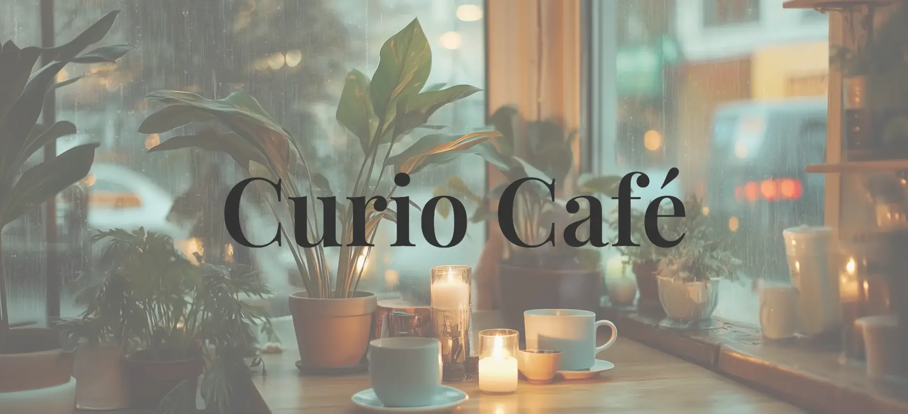
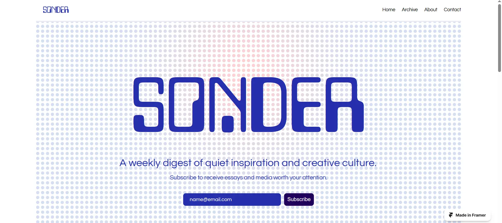
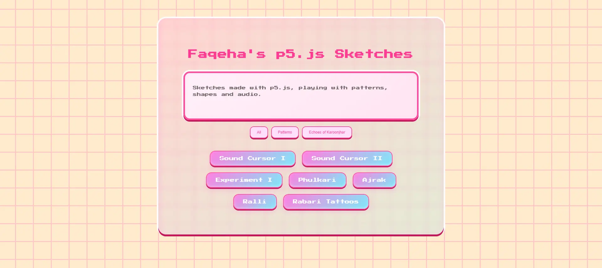

Faqeha Nadeem
Creative web designer crafting minimal, expressive digital spaces.
Live Websites & Design Work

Café Website
A clean, fast-loading one-pager for a café, built with HTML, CSS, and AOS.js for scroll-triggered animations.
Visit Website

Sonder Newsletter
A minimal, fully responsive site for a newsletter built in Framer. Includes a CMS-based archive, contact page, and subtle animations.
Visit Website
Web-based Creative Experiments

Creative Code Gallery
A playful interface for exploring p5.js sketches. Built to highlight visual experimentation and interactive design.
Visit Website
Echoes of Karoonjhar
Interactive p5.js sketches that document the patterns and heritage of the Karoonjhar Mountains. Conceptual, research-driven, and curated for a digital archive project.
Visit Website